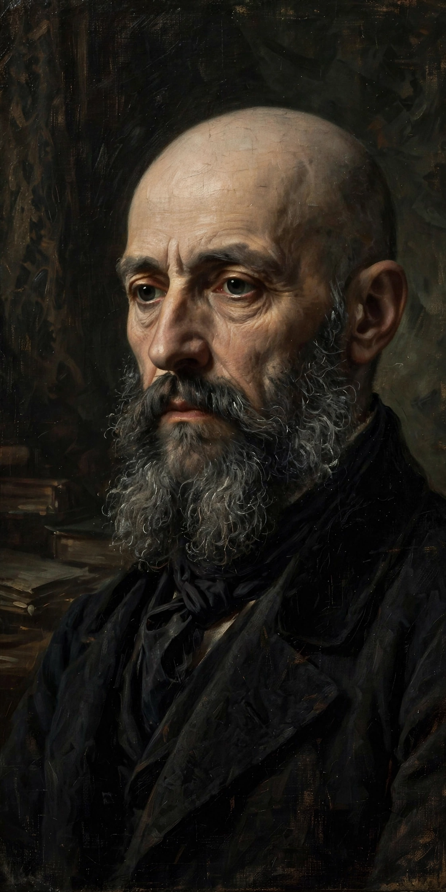

Paul Verlaine
| Paul Verlaine | |
| Born | 30 March 1844, Metz, France |
|---|---|
| Died | 8 January 1896, Paris, France |
| Occupation | Poet |
| Movement | Symbolism, Decadence |

Paul-Marie Verlaine (1844–1896) was a French poet associated with the Symbolist and Decadent movements, considered one of the finest lyric poets in the French language. His Poèmes saturniens (1866) and Fêtes galantes (1869) established his musical, melancholy style, summed up in his Art poétique: "De la musique avant toute chose" ("Music before everything").
Life
In 1871 Verlaine began a tempestuous affair with the teenage poet Arthur Rimbaud; in 1873, in Brussels, he shot and wounded Rimbaud and was imprisoned for two years at Mons, where he wrote Romances sans paroles and converted to Catholicism. Later collections include Sagesse (1880) and the critical portraits Les Poètes maudits (1884). His later years were marked by poverty, alcoholism and hospital stays in Paris, though the literary world elected him "Prince of Poets" shortly before his death.
See also: Arthur Rimbaud, Symbolism.